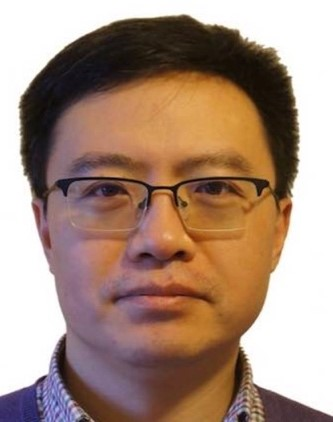

宋大为 教授
报告题目：A quantum cognitive perspective for information access and retrieval
报告摘要：Information access and retrieval (IAR) over complex online information spaces has become a preferred way of acquiring information and useful knowledge relevant to a user’s information need. Central to the process is the user's continuous yet often uncertain sense- and decision- making processes about information, which result in various non-classical phenomenon that traditional theories turn out insufficient to explain and model. This talk will introduce a quantum cognitive perspective, from which the IAR is modelled with a more general quantum probability framework.
专家简介：Professor Dawei Song received his PhD from the Chinese University of Hong Kong in 2000. Before he joined Beijing Institute of Technology in 2018, he was a Professor at Tianjin University, China, and a Professor of Computing at The Open University, UK, since 2012. Prior to these appointments, he worked as a Professor of Computing since 2008 at the Robert Gordon University, UK, where he remains as an Honorary Professor since 2012. He has also worked as a Senior Lecturer and Research Director at the Knowledge Media Institute of The Open University, UK, during 9/2005-10/2008; and as a Senior Research Scientist at the Cooperative Research Centre in Enterprise Distributed Systems Technology, Australia, during 2000-2005. His main research interest is focused on formal models for intelligent search, exploration and discovery over textual and multimodal data sources in a way that is adaptive to user’s context of interaction, and compatible with human cognitive information processing. Particularly in the recent 10 years, he has been driving force of an international joint research agenda on quantum-cognition inspired information retrieval models.